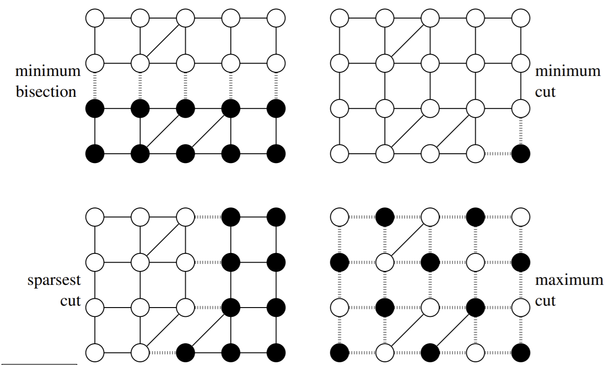
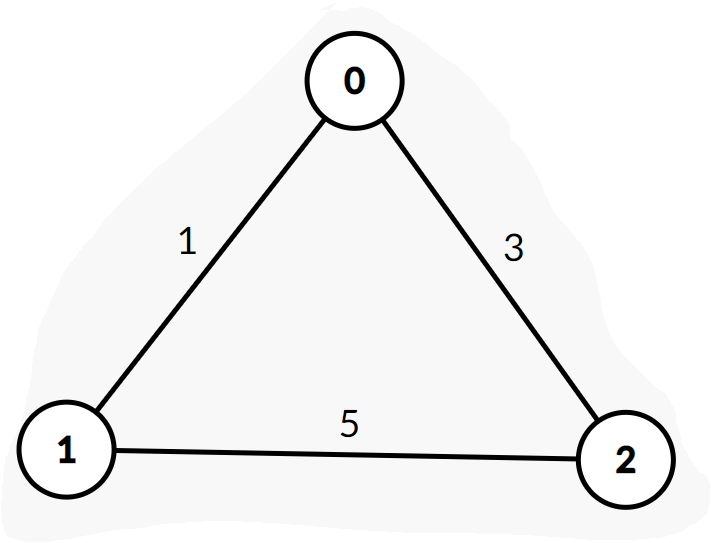
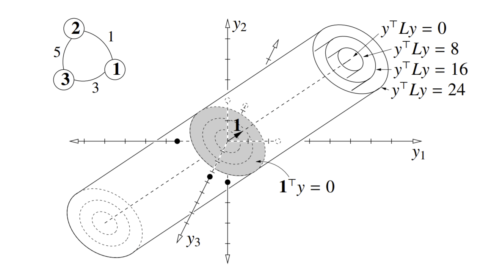
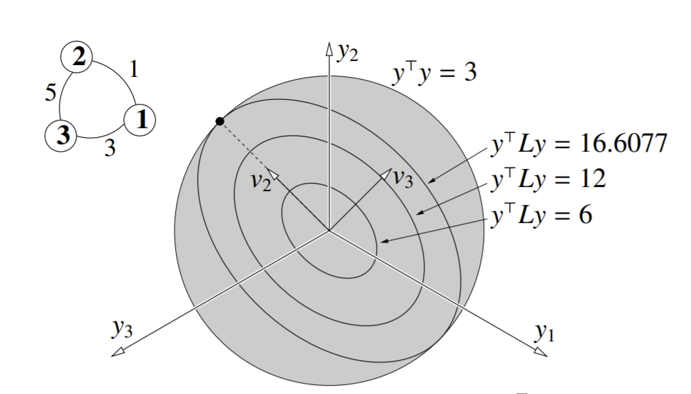
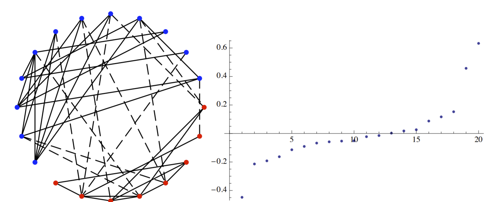
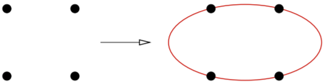

Spectral Graph Clustering
Contents
Spectral Graph Clustering¶
So we’ve gone over ways to cluster points. Now let’s go over an algorithm that clusters nodes in a graph.
Input: Weighted, undirected graph \(G = (V,E)\). No self-edges. \(w_{ij}\) is the weight of the edge connecting vertex \(i\) to vertex \(j\).
We can think of the edge weight in our graph as the similarity measure between two points \(i, j\). If the weight is large, the vertices (points) are more similar, and want to be in the same cluster. Note this is the opposite of the dissimilarity function (Euclidean distance) we covered last chapter.
The goal: Cut \(G\) into 2+ subgraphs \(G_i\) with similar sizes, but do not cut too many edges with large weights. So there’s going to be a tradeoff. One rule that can be used to implement this goal is to minimize the sparsity of the cut:
where \(\text{Cut}(G_1, G_2)\) is the total weight of cut edges, and \(\text{Mass}(G_1), \text{Mass}(G_2)\) refer to the number of vertices in subgraphs \(G_1\), \(G_2\) that result from the cut. We want to find cuts that have \(\text{Mass}(G_1)\) as close to \(\text{Mass}(G_2)\) as possible. The constraint occurs when some vertices are given a larger “mass” than others.
If we have a balanced cut, then \(\text{Mass}(G_1), \text{Mass}(G_2) = \frac{n^2}{4}\), where \(n\) is the number of vertices in \(G\). The balanced cut maximizes this product, and thus minimizes sparsity. More unbalanced cuts means larger sparsity.
Let’s look at four different ways to cut a graph.
{kind=link}
Let’s analyze each of these four cut types:
Minimum bisection:
Minimum cut:
Sparsest cut:
Maximum cut:
Finding the sparsest cut, the minimum bisection, and the maximum cut are all NP-hard problems. Let’s look for an approximate solution to the sparsest cut problem. First, let’s formalize everything in notation:
let \(n = |V|\)
let \(y \in \mathbb{R}^n\), which acts as an indicator vector: for vertex \(i\), \(y_i = 1\) if the vertex is in \(G_1\), and \(y_i = -1\) if the vertex is in \(G_2\). The go Setting up the indicator vector allows for this little beauty here:
which basically states that if vertices \(i\) and \(j\) are both in the same subgraph (\(G_1\) or \(G_2\)), we get 0. If they are separated by the cutting edge, the weight of that edge is the output. So we now have a way to indicate weights of cut edges.
This term also makes calculating the total weight of cut edges easy:
Note this is quadratic: let’s try to write it out with a matrix.
where \(L_{ij} = \begin{cases} -w_{ij} & i \neq j \\ \sum_{k \neq i} w_{ik} & i = j \\ \end{cases} \).
Note that \(L\) is a symmetric, \(n \times n\) Laplacian matrix that is effectively a matrix representation of any graph \(G\). Let’s look at an example.
{kind=link}
Our graph matrix would be \(L = \begin{bmatrix} 4 & -1 & -3\\ -1 & 6 & -5\\ -3 & -5 & 8 \end{bmatrix}\)
Since weights generally aren’t ever negative, we know \(\text{Cut}(G_1, G_2)\) can never be negative, and thus safely assume that \(L\) is positive semidefinite.
We can also see that a length-\(n\) vector of \(1\)s is an eigenvector of \(L\) with eigenvalue 0: \(L\cdot 1 = 0\). If \(G\) is a connected graph with positive edge weights, then this is the only zero eigenvalue. But if \(G\) is not connected, \(L\) has one zero eigenvalue for each connected component of \(G\).
Bisection¶
In a bisection, exactly \(\frac{n}{2}\) vertices are in \(G_1\) and in \(G_2\): the nodes are split evenly. Equivalently, we can represent this as a constraint: \(1^Ty = 0\). Remember \(y_i = 1\) for every vertex in \(G_1\), and \(y_i=-1\) for every vertex in \(G_2\): so with a bisection, there should be an equal number of 1’s and -1’s in \(y\).
So we have reduced graph bisection to a constrained optomization problem:
Definition 10 (Graph Bisection, Hard Constraint)
In finding the minimum graph bisection we want to find \(y\) that minimizes \(y^TLy\) subject to two constraints:
\(y_i=1\) or \(y_i = -1\) for all \(i\)
\(1^Ty = 0\)
We shall call constraint 1 the binary constraint and constraint 2 the balance constraint, for convenience.
Note that this problem is still NP-hard. We will relax the binary constraint a bit so we can solve the problem in polynomial time. This means \(y_i\) can be whatever in \([-1, 1]\): This allows for fractional vertices. At the end, we round this fraction to -1 or 1. This approach of relaxing discrete problems into continuous ones is very common.
We can represent this new constraint as: \(y\) must lie on a hypersphere of radius \(\sqrt{n}\), centered at the origin. This means we can relax our minimum bisection problem
Definition 11 (Graph Bisection, Hard Constraint)
In finding the relaxed minimum graph bisection we want to find \(y\) that minimizes \(y^TLy\) subject to two constraints:
\(y^Ty = n\)
\(1^Ty = 0\)
And afterwards, we round fractional elements of \(y\) to -1 or 1 appropriately.
Since we assume that \(y^TLy\) is a constant, minimizing \(y^TLy\) is equivalent to minimizing \(\frac{y^TLy}{y^Ty}\). Remember from last chapter this is the Rayleigh quotient of \(L\) and \(y\)! The constraints are the same; only the objective function is changed to something more familiar here.
Of course, in any problem involving the Rayleigh quotient, you should always think of eigenvectors.
Let’s see the visualization of the above (relaxed) problem graphically:
{kind=link}
Note the isocontours of \(y^TLy\) as concentric ellipses in the shaded region, that extends forever in the direction of the \(1\) eigenvector (vector of all 1s). Also note the balance constraint: our vector \(y\) must be _orthogonal to the vector \(1\). So we want a solution \(y\) on the shaded elliptical plane. The intersection between the relaxed balance constraint and an isocontour of \(y^TLy\) gives us our solution(s). For example:
{kind=link}
Remember from the PCA chapter that to minimize the Rayleigh quotient, we want to take the eigenvector with the smallest eigenvalue. Unfortunately, this eigenvector is \(1\), and we obviously can’t choose that. So we need the eigenvector with the second smallest eigenvalue. Let \(\lambda_2\) be the second-smallest eigenvalue. The associated eigenvector \(v_2\) is called the Fiedler vector. \(v_2\) is the relaxed problem solution. To get the hard-balance-constraint (1 and -1) solution, we simply round components to 1 or -1: if positive, round to +1, if negative, -1.
Spectral Partitioning Algorithm¶
The way we round \(v_2\) to our hard-balance-constraint solution \(y\) is via a sweep cut:
Sort components of \(v_2\) (sorting vertices of the graph)
Try all \(n-1\) cuts between successful vertex pairs, effectively creating cut vector \(y\).
Compute minimum sparsity from all of those cuts.
Let’s look at a visual example.
{kind=link}
On the right, we see a graph that represents the sorted components of \(v_2\): y-axis is the component value, x-axis is the ascending-order index. The sweep cut in this case would be trying every vertical cut in between adjacent points, and choose whichever one minimizes sparsity. On the right, we see the corresponding graph and the resulting cut: the dashed edges are the cut edges, and the solid edges are ones that remain in each subgraph \(G_1\) and \(G_2\).
Notice that this is technically NOT a bisection: there are 12 blue dots and 8 red dots. This is a result of the relaxed constraint: even though the algorithm tries. It turns out the relaxed problem is better at approximating the min-sparsity cut and not so good at min-bisection. So the tradeoff for not having a perfect bisection is that you can often greatly decrease the number of edges you have to cut.
Vertex Masses¶
What if vertices are not equal? Some vertices might be more “important” in others. For example, in computation graphs, vertices represent computations- some which take much longer to run than others. So we can weight computation vertices by runtime.
To account for this, we can add a diagonal matrix \(M\) where each diagonal element represents a vertex mass.
Now, we need to balance the total mass, and instead of our constraint being \(1^Ty=0\), we have \(1^TMy=0\): we are no longer balancing number of vertices, but mass of these vertices. So ideally, subgraphs \(G_1, G_2\) would have the same total mass. This new mass constraint is easier to solve if we relax the hypersphere constraint: our constraint goes from \(y^Ty=n\) to \(y^TMy = \text{Mass}(G) = \sum_{i}M_{ii}\): the sum of all vertex masses in \(G\). Graphically, instead of a sphere, now we constrain y to lie on an axis-aligned ellipsoid:
{kind=link}
Now, the Fielder vector we want is the solution to a generalized eigensystem \(Lv = \lambda Mv\).
Now let’s take a look at the most important theorem in spectral graph partitioning.
Definition 12 (Cheeger’s Inequality)
The sweep cut is guaranteed to find a cut with sparsity \(\le \sqrt{2\lambda_2\max_i\frac{L_{ii}}{M_{ii}}}\).
From this, we can also prove that the optimal cut has a lower bound on sparsity: \(\ge \frac{\lambda_2}{2}\). There cannot exist a cut with sparsity lower than this.
Greedy Divisive Clustering¶
So far, we’ve only talked about cutting into 2 subgraphs- but there are many cases where we want more. We can easily extend this by recursion: first, we partition \(G\) into \(G_1,G_2\), then recursively partition one of \(G_1\) or \(G_2\) however, many times until we have the right number of clusters.
Sparsity is a good criterion for graph clustering. We want to use \(G\)’s sparsest cut to divide it into two subgraphs, then recursively cut them. You can stop when you have the right number of clusters. Alternatively, you can make a finer tree and then prune it back.
Normalized Cut¶
The normalized cut is very popular in image analysis. We set vertex \(i\)’s mass \(M_{ii} = L_{ii}\). Conceptually, the mass of a vertex is equal to the sum of all edge weights connected to that vertex.